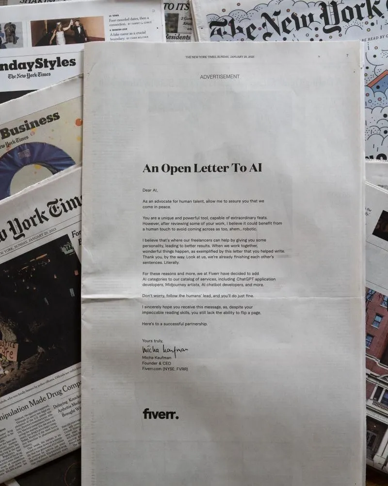

How Fiverr responded to the threat from ChatGPT
Originally posted on LinkedIn, February 1, 2023.
On January 31, 2023, Fiverr made a smart PR move in the US. It turned a threat into an opportunity.
ChatGPT made it possible to create content with AI at the click of a button. That posed a direct threat to freelancers, and especially to Fiverr's marketplace for one-off freelance services.
Instead of ignoring the shift or trying to enforce a ban on AI use, Micha Kaufman announced new categories specifically for freelancers working with AI. It was a funny, precise response that kept Fiverr relevant as the market changed.
This is how a company should respond to change: accept what is happening and adapt to what customers now need. Micha's speed and clarity were impressive.
